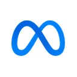

METANASDAQ · Meta Platforms, Inc.
Fair value (blend propio)
$745.96
vs. $610.15 mercado · +22.3%
POSTURA DEL ANÁLISIS: NEUTRAL — PUBLICIDAD SÓLIDA, FLUJO DE CAJA LIBRE NEGATIVO Y UN 2027 FINANCIADO CON DEUDA Y ACCIONES NUEVAS — el blend queda por encima del mercado, pero el DCF Base queda 11.8% por debajo y el capex 2027 todavía no tiene guía (ver Sección 13)
Este documento es análisis independiente con fines informativos y educativos. El autor no es un asesor financiero registrado (no CFA / no matriculado ante la CNV/SEC) y este contenido no constituye una recomendación de compra, venta o mantenimiento para ningún lector en particular. Ver disclosure completo al pie.
Publicidad digital · Familia de Apps (Facebook, Instagram, WhatsApp, Messenger, Threads) · Reality Labs (RA/RV, anteojos con IA) · Infraestructura de IA
Meta cerró el trimestre finalizado el 30-sep-2026 con ingresos de $64.6 mil millones (+26% interanual), por
encima del techo de su propia guía, con impresiones +10%, precio por aviso +14% y 3.640 millones de personas
activas diarias. El resultado contable quedó tapado por un cargo de $9.890 millones del acuerdo con 52 fiscales
generales de EE.UU. por salud mental adolescente: sin ese cargo, el EPS fue $7.40, apenas 2.1% más que los $7.25
comparables del mismo trimestre de 2025. El capex llegó a $34.910 millones y el flujo de caja libre fue negativo
(−$2.120 millones). Después del cierre, Meta creó una clase C de acciones
sin voto (equivale a un split 2 por 1 desde enero de 2027) y salió a buscar $56.150 millones entre bonos, una
preferida convertible y una venta de acciones a plazo. La acción cayó 7.0% la sesión siguiente al reporte. Este
informe recorre el negocio completo y cierra, recién en la última sección, con la valuación.
Var. ingresos (últ. trim.)
+26%
Margen operativo TTM (sin cargos legales)
38.4%
01 — Resumen Ejecutivo
La publicidad sigue creciendo 26%; lo que cambió es cómo se paga la apuesta de IA
El 21 de octubre de 2026, Meta Platforms reportó ingresos de $64.6 mil millones para el tercer trimestre de 2026
(+26% interanual, igual en moneda constante), por encima del rango de $61-64 mil millones que la propia compañía
había guiado en julio y del consenso de ~$63.4 mil millones. El motor publicitario cambió de mezcla: las
impresiones crecieron 10% (contra 14% en el segundo trimestre) y el precio promedio por aviso subió 14% (contra
12%). La familia de aplicaciones llegó a 3.640 millones de personas activas diarias (+3%) y el ingreso por persona
(ARPP) subió 23%, a $17.72.
El resultado contable fue de $3.83 por acción. La comparación interanual (+265%) no dice nada: el tercer trimestre
de 2025 cargó un impuesto extraordinario de $15.930 millones y el de 2026 un cargo legal de $9.890 millones. Sin
esas dos partidas, el EPS pasó de $7.25 a $7.40 (+2.1%). El margen operativo sin el cargo fue 35.4%, contra 40.1%
un año antes: los costos sin el cargo crecieron 35.9%, contra 26% de los ingresos, por infraestructura, depreciación
y compra de tokens de IA a terceros.
El capex del trimestre fue de $34.910 millones (incluye capital de leasing financiero) y el flujo de caja libre
quedó en −$2.120 millones. En doce meses, el FCF bajó de $42.7 mil millones a $25.1 mil millones. Meta afinó la
guía de capex 2026 a $135-145 mil millones y no dio número para 2027, más allá de que seguirá invirtiendo "de forma
agresiva". En las dos semanas siguientes al reporte salió a buscar financiamiento: $15.000 millones en bonos,
$12.500 millones en una preferida convertible obligatoria y una venta de 46 millones de acciones a plazo por unos
$28.650 millones. Antes había anunciado una nueva clase C de acciones sin voto, que se reparte 1 por cada acción
existente a partir de enero de 2027.
En la Sección 13, el blend ponderado da $745.96 por acción, 22.3% por encima del cierre de $610.15
del 6-nov-2026 y 6.5% por debajo de los $797.44 del informe anterior. Ese número anterior era un promedio simple;
con la ponderación vigente hubiera sido $810.11, así que la baja comparable es de 7.9%. La mayor parte de la baja
viene de dos correcciones de método, no del negocio: la reversión histórica se recalculó con el P/E propio sobre
EPS de los 10-Q sin extraordinarios (20.7x, contra 26.5-27.9x de proveedores externos) y el DCF ahora arranca en
2027 con el capex que la compañía está financiando. El DCF Base da $537.88, 11.8% por debajo del mercado. La
postura sigue neutral.
02 — Historia y Evolución
De "The Facebook" a Meta: veintidós años con el mismo fundador al mando
Mark Zuckerberg fundó "The Facebook" en su dormitorio de Harvard en febrero de 2004; la compañía salió a bolsa en
mayo de 2012 a $38 por acción y cotizó por debajo de ese precio durante más de un año. Las dos adquisiciones que
definieron la década siguiente fueron Instagram en 2012 por $1.000 millones y WhatsApp en 2014 por $19.000
millones. Las dos sobrevivieron al juicio antitrust de la FTC (fallo a favor de Meta del 18-nov-2025, apelado por
la FTC el 20-ene-2026, ver Sección 10) y son, junto con Facebook, Messenger y Threads, la familia de aplicaciones
que factura el 99.3% de los ingresos.
En octubre de 2021 la compañía cambió su nombre de Facebook, Inc. a Meta Platforms, Inc. y creó el segmento
Reality Labs para la realidad aumentada y virtual. Cinco años después, Reality Labs sigue perdiendo más de $4.000
millones por trimestre, aunque la compañía ya guía una baja: $18-19 mil millones de pérdida en 2026 y unos $15.000
millones en 2027, con la inversión reasignada hacia IA (Sección 04).
La nueva etapa se mide en capital: de $39.200 millones de capex en 2024 a $72.200 millones en 2025 y a una guía de
$135-145 mil millones para 2026 (+94% en el punto medio). En 2025 Meta invirtió $14.300 millones en Scale AI y
contrató a su fundador para liderar Meta Superintelligence Labs; en el tercer trimestre de 2026 lanzó Muse, su
primer modelo de frontera. Y en octubre de 2026 salió a buscar capital con acciones, además de deuda.
Ingresos anuales reportados, FY2016–FY2025, y TTM al cierre del trimestre de septiembre 2026 (miles de millones USD). Fuente: SEC EDGAR (10-K/10-Q), XBRL.
03 — Modelo de Negocio y Segmentos
Un negocio publicitario casi puro que financia la apuesta de IA y de hardware
Meta reporta dos segmentos: Family of Apps (FoA) —Facebook, Instagram, WhatsApp, Messenger y Threads— y Reality
Labs (RL) —hardware y software de realidad aumentada y virtual, incluidos los anteojos con IA—. En el trimestre de
septiembre de 2026, FoA facturó $64.158 millones (99.3% del total) con un resultado operativo de $17.117 millones,
y Reality Labs facturó $443 millones (−6%) y perdió $4.129 millones (contra $4.432 millones un año antes). El cargo
legal de $9.890 millones está dentro de FoA: sin él, el margen operativo de FoA habría sido 42.1%, contra 49.2% en
el tercer trimestre de 2025.
Ingresos por segmento, 3T 2026 (miles de millones USD).
El ingreso publicitario es impresiones por precio. En el tercer trimestre la mezcla se movió hacia precio: las
impresiones crecieron 10% (14% en los nueve meses), con Asia-Pacífico a la cabeza, y el precio por aviso subió 14%.
Que el precio crezca más que el volumen indica que los avisos convierten mejor: la compañía atribuye ese avance a
sus modelos de ranking (más detalle en la Sección 04). Las personas activas diarias crecieron 3%, así que casi todo
el crecimiento sigue viniendo de monetizar mejor a la misma base de usuarios.
Variación interanual de impresiones y de precio promedio por aviso, 2T 2026 vs. 3T 2026 (%). Fuente: 10-Q del 2T26 y del 3T26.
Ingreso promedio por persona (ARPP) trimestral, 3T 2024 a 3T 2026 (USD). El 4T es estacionalmente alto. Fuente: 10-Q del 3T26.
04 — Desarrollos Recientes y Perspectiva
Cinco frentes que definen los próximos trimestres
IA aplicada a avisos: dónde está la mejora de precio
En la conference call del 21-oct-2026, la CFO Susan Li detalló las mejoras de los modelos de avisos: el nuevo
recomendador generativo (que usa LLMs para cruzar el contenido del aviso con las preferencias del usuario) subió
casi 2% las conversiones en los segmentos donde se aplicó en el feed de Facebook; el modelo JEM, 9.6% las
conversiones de avisos de apps; Andromeda, 1.4%. Casi 10 millones de anunciantes usaron al menos una herramienta
generativa para crear avisos, y los que adoptaron el asistente de negocios con IA lograron casi 5% más conversiones
al mismo costo. Advantage+ es el canal por el que llegan estas funciones; la compañía no dio una cifra de ingresos
de Advantage+ en el trimestre.
WhatsApp y Threads: monetización todavía chica
Los otros ingresos de FoA, sobre todo mensajería paga de WhatsApp y suscripciones, crecieron 59% a $1.097 millones:
todavía 1.7% del total. Zuckerberg presentó a WhatsApp como plataforma para agentes de negocio. Para Threads, la
compañía informó que el tiempo por usuario creció más de 20% interanual, pero no dio ingresos por avisos de Threads
ni de la sección de Estados de WhatsApp. Este informe no les asigna valor separado.
Reality Labs: baja la pérdida y cambia el discurso
La pérdida de Reality Labs del trimestre fue $4.129 millones (−7% interanual) y la de nueve meses, $12.775
millones. La guía de pérdida 2026 bajó a $18-19 mil millones, lo que implica entre $5.200 y $6.200 millones en el
cuarto trimestre. Para 2027 la compañía espera "alrededor de $15.000 millones", reasignando inversión hacia IA.
Zuckerberg dijo que en realidad virtual solo lanzarán equipos nuevos cuando haya "avances importantes", y que Muse
llega a los anteojos de Meta. Es la primera vez que Meta pone un número a la baja de la pérdida: el discurso pasó de
sostener el gasto a recortarlo, aunque $15.000 millones sigue siendo más que el resultado operativo de un
trimestre completo de FoA.
Muse, la nueva clase C y el financiamiento
Meta lanzó Muse y Muse Wonder, su primer modelo de frontera, y la compañía informó más de 10 millones de agentes
personales creados en EE.UU. y Canadá en unas seis semanas. Al mismo tiempo, el directorio aprobó una clase C de
acciones sin voto, cotizable en Nasdaq, que se reparte como dividendo de una acción C por cada acción A o B a partir
del 19-ene-2027. La compañía la presentó como herramienta para levantar capital, pagar compensación y hacer
adquisiciones sin diluir el control de Zuckerberg (Sección 09). El 26-oct-2026 colocó una preferida convertible
obligatoria de $12.500 millones al 6.50% y firmó ventas a plazo por 46 millones de acciones (precio inicial
$622.92); el 5-nov-2026 cerró bonos por $15.000 millones con cupones de 5.85% a 7.50%. En total, $56.150 millones
de capital nuevo en dos semanas (Sección 06).
El acuerdo con los fiscales generales
En agosto de 2026 Meta acordó con 52 fiscales generales de EE.UU. cerrar los juicios por salud mental adolescente,
con pagos de hasta $18.590 millones: $12.700 millones en cuotas anuales durante 10 años, $75 millones de costos y
$5.300 millones condicionales a que competidores como YouTube y TikTok asuman obligaciones equivalentes. Meta
reconoció $11.890 millones de cargos en 2026 ($9.890 millones en el tercer trimestre); los $5.300 millones
condicionales no están devengados. Quedan afuera Florida, Nuevo México y las Islas Vírgenes, y siguen los juicios
individuales (Sección 10).
05 — Estados Financieros
Los últimos dos trimestres, con y sin las partidas extraordinarias
Los dos trimestres tienen cargos que no se repiten: en el segundo, $2.400 millones de cargos legales y $1.180
millones de indemnizaciones; en el tercero, los $9.890 millones del acuerdo con los fiscales. La tabla muestra las
cifras contables y, abajo, las mismas sin esas partidas. Los ingresos aceleraron de $60.801 a $64.601 millones,
y el gasto en I+D bajó de 35.6% a 31.0% de los ingresos.
La base de comparación: por qué el EPS interanual de +265% no sirve
El tercer trimestre de 2025 tuvo un cargo impositivo extraordinario de $15.930 millones por la ley fiscal de EE.UU.
(OBBBA): la utilidad neta fue $2.709 millones y el EPS, $1.05. El primer trimestre de 2026 tuvo el efecto
contrario, un beneficio impositivo de $8.030 millones. Sin esas partidas, el EPS comparable del tercer trimestre
pasó de $7.25 a $7.40 (+2.1%), con ingresos +26%: la diferencia la explican el costo de infraestructura y
depreciación (D&A del trimestre $7.154 millones, +44%) y la compensación en acciones ($7.363 millones, +33%).
Ese EPS comparable es el que usa la reversión histórica de la Sección 13.
Margen operativo trimestral, 3T 2025 a 3T 2026: GAAP y sin cargos legales e indemnizaciones (%). Fuente: SEC EDGAR XBRL / Form 8-K; cálculo propio.
06 — Deuda y Balance
De caja neta a deuda neta, con $56.000 millones de financiamiento después del cierre
En junio Meta tenía caja neta de $6.600 millones; al 30 de septiembre, deuda neta de $1.220 millones. No hubo
deuda nueva en el trimestre: la caja cayó porque el capex superó al flujo operativo y porque $10.800 millones pasaron
a caja restringida como garantía de contratos de infraestructura. La propiedad y equipo creció 43.6% en nueve meses,
a $253.200 millones. La deuda equivale a 0.71 veces el EBITDA TTM sin cargos legales: el balance no tiene un problema
de solvencia.
El financiamiento posterior al cierre
Cómo lo trata la valuación (Sección 13): la deuda neta para el DCF parte de los −$1.220 millones del balance, suma
los $11.890 millones devengados del acuerdo con los fiscales (es plata que se va a pagar en diez años y no está en
el flujo operativo proyectado) y resta lo que entra por la preferida ($12.500 millones) y por el forward ($28.650
millones). Los $15.000 millones de bonos entran como deuda y como caja al mismo tiempo, así que no cambian el
número. Las acciones suben de 2.573 a 2.639 millones (+2.6%): la preferida se cuenta al máximo de 20 millones
porque el precio de $610.15 está por debajo de $625, y el forward, por 46 millones. Resultado: caja neta
proforma de $28.040 millones.
Centros de datos fuera de balance: Hyperion (Luisiana) y Texas
Meta tiene 20% de dos sociedades que construyen centros de datos: la de Luisiana (el proyecto Hyperion, octubre de
2025, costo total estimado ~$27.000 millones) y la de Texas (julio de 2026, ~$14.000 millones, de la que recibió
una distribución de $1.037 millones). No las consolida porque no controla las decisiones clave, así que su deuda
no aparece en el balance de Meta. Meta les alquila los campus (desde 2028 y 2029, cuatro años iniciales y hasta 20
con renovaciones) y les dio garantías de valor residual. La exposición máxima declarada es de $68.400 millones.
No sumamos los alquileres a la deuda porque ya están dentro del flujo proyectado: el DCF descuenta el flujo
operativo después de pagar alquileres operativos, y el capex incluye el capital de los leasings financieros. Sumarlos
también como deuda sería contarlos dos veces. La garantía de valor residual es distinta: solo se paga si Meta no
renueva y el campus vale menos que el umbral. Por eso entra únicamente en el escenario Bear (25% del máximo,
$10.370 millones), que es justamente el caso en el que Meta tendría exceso de capacidad.
07 — Flujo de Caja y Capital Allocation
El flujo de caja libre del trimestre fue negativo
Capex y flujo de caja libre trimestral, 3T 2025 a 3T 2026 (miles de millones USD). Fuente: SEC EDGAR XBRL; cálculo propio.
El flujo operativo siguió creciendo (+9.3% interanual en el trimestre), pero el capex casi se duplicó (+80%). La guía
de 2026, $135-145 mil millones, implica entre $49.200 y $59.200 millones de capex en el cuarto trimestre, contra
$85.820 millones acumulados en nueve meses: el FCF del cuarto trimestre probablemente vuelva a ser chico o negativo.
Meta no recompró acciones en los nueve meses de 2026 (le quedan $25.030 millones autorizados) y sostuvo el dividendo de $0.525 por
trimestre ($1.360 millones). En la práctica, la compañía dejó de devolver capital con recompras y pasó a pedirlo al
mercado.
Capex 2026 por compañía (miles de millones USD; punto medio del rango cuando hay guía; Apple: real del FY26). Escala lineal.
En dólares, Meta es la que menos gasta de las cuatro grandes que invierten en IA. Medido contra sus ingresos es la
que más: $140.000 millones sobre una base de ~$256.000 millones en 2026 es 55% de los ingresos, y Meta no vende
capacidad de nube a terceros como Amazon, Microsoft o Alphabet. Zuckerberg repitió en la call que no planea vender
cómputo crudo, sino servir "la mayor cantidad posible de demanda de inferencia de alto margen" con sus propios
productos.
08 — Comparables de Industria
META frente a las otras mega-caps y a la publicidad pura
Alphabet sigue siendo el comparable más directo: publicidad financiando infraestructura de IA, con la diferencia de
que Google Cloud factura esa infraestructura a terceros. Amazon y Microsoft comparten la escala del capex y tienen
una nube que la monetiza. Apple es el contraste: casi no gasta en infraestructura. Los tres primeros ya están
actualizados al 3T 2026 en este desk; los múltiplos usan los mismos EPS 2027 de esos informes.
P/E sobre EPS 2027E. META cotiza al múltiplo más bajo de las mega-caps; Pinterest y Reddit, publicidad pura de menor escala, cotizan a una fracción.
Alphabet (GOOGL) — el par más directo, con nube para monetizar el capex
Alphabet cotiza a 18.7x el EPS 2027, apenas por encima de Meta, con un capex 2026 de $195-205 mil millones. La
diferencia de lectura es que Google Cloud factura a terceros la capacidad que construye; en Meta, el retorno del
capex pasa por el precio de los avisos y por productos de IA que todavía no tienen ingresos reportados.
Amazon (AMZN) y Microsoft (MSFT) — capex mayor, con backlog que lo respalda
Amazon (23.8x) y Microsoft (24.0x) gastan más en dólares, pero muestran demanda contratada: el backlog de AWS pasó de
$364.000 a $578.000 millones en un trimestre, y Microsoft reporta un RPO comercial creciente. Meta no tiene una
métrica equivalente; el mercado le cobra esa diferencia con un múltiplo menor.
Apple (AAPL) — la prima por no gastar
Apple invirtió $9.040 millones en todo su año fiscal 2026, lo que Meta gasta en unas tres semanas y media, y cotiza a
36.3x. Es el extremo del panel y sube el promedio: sin Apple, el P/E promedio de los pares baja de 25.7x a 22.2x
(Sección 13).
Pinterest (PINS) y Reddit (RDDT) — referencia de publicidad pura
Pinterest (8.3x) y Reddit (10.2x) dependen casi solo de publicidad, como Meta, pero son mucho más chicos y crecen
con menos poder de precio. Su múltiplo muestra que el mercado de 2026 no paga por "publicidad" en sí sino por
escala y por la capacidad de financiar IA. No los promediamos: con márgenes y escalas tan distintas distorsionarían
el método más de lo que lo informan.
09 — Gobierno Corporativo y Estructura Accionaria
Una compañía de fundador-controlador que ahora puede emitir sin diluir el voto
Mark Zuckerberg tiene alrededor de 13% del capital económico y cerca de 61% del voto gracias a las acciones clase B
(10 votos por acción, contra 1 de la clase A). Al 16-oct-2026 había 2.214 millones de acciones A y 342 millones de
acciones B en circulación. La recapitalización de octubre agrega una tercera clase: la clase C, sin voto, que se
reparte 1 por 1 a todos los accionistas desde el 19-ene-2027 (Meta espera que el precio de la clase A refleje un
split 2 por 1). Como la C no vota, Meta puede usarla para levantar capital, pagar compensación o adquirir empresas
sin que el control de Zuckerberg baje.
Ownership económico de Zuckerberg
~13%
Vía ~341.8 millones de acciones clase B y una tenencia menor de clase A.
Poder de voto de Zuckerberg
~61%
Clase B con 10 votos por acción; la nueva clase C no vota, así que no cambia.
Clase C (sin voto)
1 por 1
Dividendo en acciones desde el 19-ene-2027, aprobado por consentimiento escrito el 20-oct-2026.
Founder Alignment Agreement
80% atado
Zuckerberg solo puede vender 20% de sus acciones C libremente; el resto exige vender a la par acciones con voto, o se libera 2.5% por trimestre mientras siga al frente.
Dividendos C adicionales
Por duplicación
Nuevo 1 por 1 cada vez que la C duplique el precio de referencia ($580.60 del 10-sep-2026, ajustado) con retorno anual de al menos 10%.
CEO / Chairman
Mark Zuckerberg
CEO desde 2004; se comprometió a residir en California (o donde esté la sede) durante ocho años.
El acuerdo con el fundador busca alinear: Zuckerberg no puede convertir en efectivo la mayoría de sus acciones C
sin resignar voto, y la liberación gradual depende de que siga al frente. Pero también tiene un costo para el resto
de los accionistas: Meta queda habilitada a emitir capital sin voto en gran escala, y la propia compañía lo
justificó por "la escala de inversión requerida" en IA. Las primeras emisiones ya ocurrieron en clase A. Con la
clase C, la dilución económica deja de tener el freno natural que antes ponía el control de voto. Sumado a una
compensación en acciones de $7.363 millones por trimestre y a $75.590 millones de compensación no reconocida, la
cantidad de acciones es una variable a seguir trimestre a trimestre.
10 — Registro de Riesgos
Qué podría cambiar esta lectura
11 — Catalizadores
Agenda de eventos relevantes
12 — Modelo Financiero Proyectado y Momentum de Estimados
Lo reportado contra lo esperado, y la guía del cuarto trimestre
La guía del cuarto trimestre, $73-76 mil millones, implica un crecimiento de 21.9% a 26.9% contra los $59.893
millones del 4T 2025, con un punto (1%) de viento en contra cambiario. El punto medio queda 1.0% por encima del
consenso previo; con él, el año 2026 cerraría en ~$256.200 millones, en línea con el consenso posterior de $256.880
millones. La guía de gastos implica un resultado operativo 2026 de ~$89.100 millones sin el cargo, por encima de los
$83.280 millones de 2025, como la compañía prometió.
Ingresos del 4T 2026: consenso previo, piso, punto medio y techo de la guía (miles de millones USD).
Los precios objetivo se movieron en direcciones distintas: según la prensa financiera, al menos 15 casas los subieron
después del reporte (por ejemplo JPMorgan, de $920 a $940), mientras Wells Fargo lo bajó de $1,000 a $995 por la
incertidumbre sobre el capex 2027. El promedio de $850.10 está 39.3% por encima del precio: el mercado y los
analistas leen distinto el mismo trimestre. No tenemos una serie completa de revisiones de EPS de 90 días para
META; la tabla de consenso es una foto al 6-nov-2026.
13 — Valuación: Cuatro Métodos y el Fair Value
Cuánto vale la acción, mirado desde cuatro ángulos distintos
Calculamos el valor con cuatro métodos independientes —flujo de caja descontado, comparables, reversión a la media
histórica propia y consenso de Wall Street— y los combinamos con la ponderación del desk: 15% DCF, 25%
comparables, 35% reversión y 25% consenso. Todo el cálculo está en un script
(.claude/skills/informe-bigtech/modelos/meta/valuacion.py), que reproduce primero el informe anterior.
Punto de partida: el informe anterior
El informe con datos al 2T 2026 dio $797.44 con un promedio simple de los cuatro métodos (DCF
Base $688.32, comparables $852.00, reversión $814.95, consenso $834.50) con el precio a $556.71. Con la
ponderación actual (15/25/35/25), esos mismos cuatro números hubieran dado $810.11. El script reproduce el DCF
Base exacto ($688.32) con trayectorias lineales; para eso necesita 2.533 millones de acciones (el informe no las
declaraba; las diluidas reportadas eran 2.565 millones). Con esa misma convención, el Bear da $214.50 (publicado
$208.93, +2.7%) y el Bull $1,367.68 (publicado $1,338.60, +2.2%): la diferencia viene de que las trayectorias
publicadas no eran lineales año a año. El modelo nuevo usa trayectorias lineales en los tres escenarios.
Método 1 — Flujo de caja descontado (DCF), tres escenarios
El año 1 es 2027. El ingreso de partida es el consenso 2027 ($312.630 millones, +21.7%), coherente con la guía de
la compañía de "crecimiento fuerte durante todo 2027": siguiendo la regla del desk, pesamos más la demanda guiada
que el TTM. El margen de flujo operativo del año 1 se ancla en el real: 55.1% en los últimos doce meses y 50.8% en
el tercer trimestre, cuando el flujo operativo ya absorbía más depreciación y costo de IA. El Base usa 52%. El
capex del año 1 va en dólares: $200.000 millones en el Base (64% de los ingresos), contra los $140.000 millones de
2026 y la referencia de ~$250.000 millones de Wells Fargo. El WACC base es 10.5%: costo del capital de 10.86%
(Treasury a 10 años de 4.859% más beta 1.20 × 5.0%), con 6.0% de deuda a 5.0% después de impuestos.
El Base queda 11.8% por debajo del mercado; el promedio simple de los tres escenarios es $568.99 y el ponderado
por probabilidad (25/45/30), $583.50. Como el flujo de los primeros años es negativo, casi todo el valor viene del
valor terminal: 89.9% en el Base y más de 100% en el Bear, donde el valor presente de los años 1 a 5 es negativo.
Es un modelo muy sensible al largo plazo y hay que leerlo con esa cautela.
Chequeo de sesgo: el margen de OCF del Base (52%) está por debajo del TTM (55.1%) pero por encima del tercer
trimestre (50.8%); el capex de $200.000 millones es una estimación propia porque no hay guía. El Bear no hace
retroceder la publicidad: asume crecimiento menor (12% → 6%), margen estancado cerca del nivel del tercer trimestre
y capex de $230.000 millones, el caso en que la IA no devuelve lo invertido (Sección 10). La razón de fondo de la
caída del Base frente a julio ($688.32) es que ahora el año 1 carga el capex que la compañía ya está financiando,
y el WACC sube de 10.0% a 10.5% con el Treasury a 4.86%. El financiamiento nuevo casi no mueve el número: sin él,
el Base daría $535.68.
DCF inverso: qué exige el precio
Con el resto del Base fijo, el precio de $610.15 exige un margen de OCF de 60.9% en el año 5 (contra 57% del Base
y 58.5% del 3T 2025, antes de la suba de costos de IA), o bien un capex de 23.1% de los ingresos en el año 5 (contra
27%). No es un pedido extremo: alcanza con que el capex se normalice algo más rápido de lo que suponemos.
Sensibilidad del caso Base: WACC × crecimiento terminal
Método 2 — Múltiplos de comparables
Aplicamos el P/E 2027E promedio de los cuatro comparables de la Sección 08 (25.71x) al EPS 2027 de consenso de Meta
($35.59). El consenso ya es posterior al reporte, así que no tiene el problema del informe anterior, cuando el EPS
era previo a un trimestre flojo.
Tomamos $914.89, el mismo criterio (promedio de los cuatro) que en el informe anterior. Es el método más alto del
blend, y la razón es Apple: sin Apple sería $789.59, con la mediana $850.77. Meta cotiza a 17.1x el EPS 2027, el
múltiplo más bajo de las mega-caps; el método supone que esa brecha se cierra, y la Sección 08 explica por qué el
mercado se la está cobrando (capex sin cliente externo, dilución, juicios).
Método 3 — Reversión a la media histórica propia (ventana limpia)
El informe anterior usó P/E promedio de 5 y 10 años de proveedores externos (26.46x y 27.87x) aplicados al EPS
forward. Acá lo calculamos con datos propios: el precio de cierre de cada trimestre dividido por el EPS de los
cuatro trimestres anteriores, tomado de los 10-Q/10-K y sin partidas extraordinarias (el impuesto del 3T25, el
beneficio impositivo del 1T26 y los cargos legales e indemnizaciones de 2026). Aplicamos el promedio de los últimos
cuatro cierres al EPS comparable TTM ($31.00).
Tomamos $640.09. Es 21.5% menos que el $814.95 del informe anterior, y casi toda la diferencia es de método: los
múltiplos de proveedores incluían años con un P/E más alto que el propio sobre EPS limpio. Lo mismo pasó en AMZN
(46.5x de proveedor contra 34.8x propio). Usamos la ventana de cuatro trimestres porque es la regla del desk; la de
ocho da $704.22 y la mostramos como referencia.
Método 4 — Consenso de Wall Street
Síntesis: los cuatro métodos, uno al lado del otro
"Football field" — rango bajo/alto de cada método (DCF: Bear a Bull; comparables: piso a techo del panel; reversión: mínimo y máximo de la ventana de 4 trimestres; consenso: rango de precios objetivo). Línea roja: precio de mercado ($610.15). Línea azul: blend ponderado ($745.96).
El blend ponderado da $745.96 por acción, 22.3% por encima del cierre de $610.15. Contra el
informe anterior ($797.44, promedio simple con precio de $556.71) es 6.5% menos; contra el mismo informe con la
ponderación vigente ($810.11), 7.9% menos. En el mismo período la acción subió 9.6%. Tras el split de la clase C, el
equivalente sería ~$372.98 por acción.
La postura sigue neutral. El negocio publicitario está mejor que en julio: crece 26% con más
precio por aviso y la guía del cuarto trimestre supera al consenso. Pero el blend queda arriba del mercado gracias a
los dos métodos que miran a terceros (comparables y consenso); los dos que miran a Meta (DCF y reversión) dan
$537.88 y $640.09, alrededor del precio. Para que la diferencia se cierre a favor del blend, Meta tiene que mostrar
en 2027 que el capex se traduce en flujo de caja: que la guía de capex 2027 no supere de forma amplia los $200.000
millones del Base y que la pérdida de Reality Labs efectivamente baje a ~$15.000 millones.
14 — Limitaciones del Modelo
Qué asume este análisis, y dónde puede fallar
El capex 2027 del DCF ($200.000 millones en el Base) es una estimación propia: Meta no dio guía y la única
referencia pública que encontramos es la de un analista (~$250.000 millones, Wells Fargo), que no verificamos
contra el documento original. El DCF tiene 89.9% de su valor en el valor terminal. El EPS comparable del 2T26
usa supuestos fiscales propios (21% para indemnizaciones y la relación neta/bruta que Meta declaró para el cargo
del 3T26); la compañía no publicó esa cifra. El consenso de ingresos del 3T (~$63.4 mil millones) y del 4T
(~$73.73 mil millones, LSEG) viene de la prensa financiera, no de una base de datos verificada. La conversión de
la preferida se cuenta al máximo de 20 millones de acciones; no verificamos si se ejerció la opción de
depositary shares adicionales ni el precio final del forward, que se ajusta en el tiempo. Los EPS 2027 de los
comparables son consenso de stockanalysis.com y el de Microsoft es un promedio de dos años fiscales. Las
garantías de valor residual de los ventures se tratan con un 25% arbitrario en el Bear. Todas las cifras por
acción son previas a la clase C; desde el pago del dividendo de acciones, hay que dividirlas por dos.
Documento elaborado a partir de fuentes públicas: SEC EDGAR (Form 8-K del 21-oct, 29-oct y 5-nov-2026 con sus
exhibits, Form 10-Q del 22-oct-2026, prospectos 424B5 del 28-oct-2026, DEF 14C del 2-nov-2026, DEF 14A de
abr-2026 y XBRL companyfacts), conference call de resultados del 21-oct-2026 (transcripción de The Motley Fool),
Yahoo Finance (precios y Treasury a 10 años), stockanalysis.com / S&P Global (consenso), LSEG, CNBC, Barchart y
Yahoo Finance (cobertura de prensa del reporte), y los informes de AMZN, GOOGL, MSFT y AAPL de este mismo desk.
Cifras fundamentales con fecha de corte en el trimestre cerrado el 30 de septiembre de 2026; financiamiento
posterior hasta el 5 de noviembre de 2026; precios al cierre del 6 de noviembre de 2026.
Sobre el autor y la naturaleza de este documento: este informe es un análisis independiente
elaborado por Manfredi Investment Research & Markets con fines exclusivamente informativos y educativos. El
autor no es un asesor de inversión registrado, no está matriculado ante la Comisión Nacional de Valores (CNV), la
SEC, ni ningún otro organismo regulador equivalente, y no mantiene una relación de asesoramiento financiero
personalizado con el lector. Ninguna cifra de este documento —incluido el "fair value" de portada, los escenarios
de DCF, ni la síntesis de la Sección 13— constituye una recomendación de compra, venta o mantenimiento para
ningún lector en particular, ni considera la situación financiera, los objetivos o el perfil de riesgo individual
de quien lo lee. Los escenarios de DCF son estimaciones propias sujetas a los supuestos declarados explícitamente
en la Sección 13, y no representan guidance oficial de ninguna de las compañías mencionadas salvo donde se cita
de forma directa y atribuida. Verificar cifras contra el 10-Q/10-K/8-K más reciente de cada compañía, y consultar
a un asesor financiero matriculado, antes de tomar cualquier decisión de inversión.